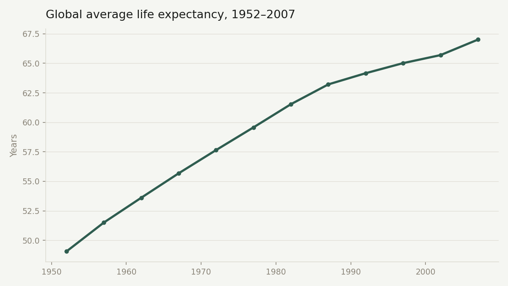
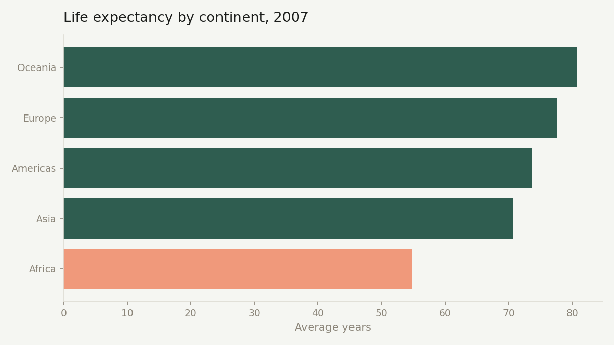
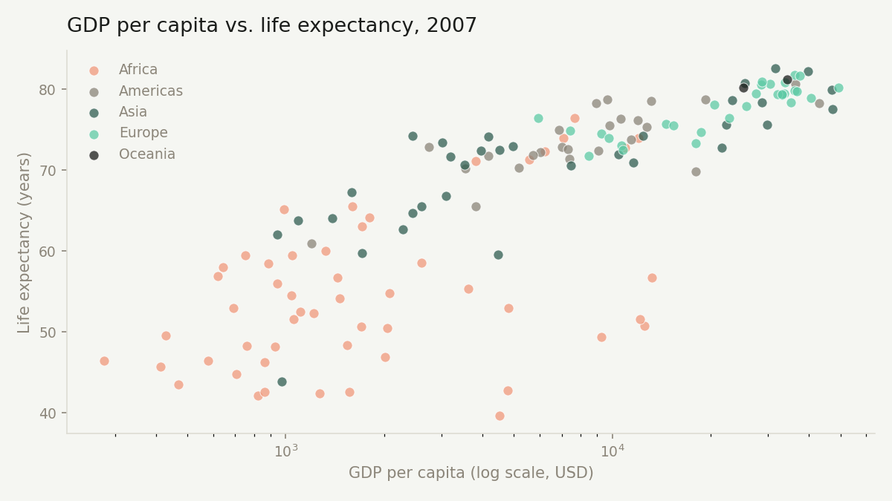

Reading 55 years of global health & economic data into decisions
An independent analysis of the Gapminder dataset — 142 countries, 1952–2007 — built to practice turning raw public data into findings a decision-maker could actually act on.
The question
Public health and economic datasets are full of numbers but short on stories. The goal of this project was to take a large, unfamiliar dataset and answer a decision-maker's real question: where has progress happened, where has it stalled, and what's driving the difference?
Approach
I started in Python — loading and cleaning the data with pandas, then running exploratory analysis to find the shape of the dataset before deciding what was worth digging into: global trends, continental gaps, and outliers worth investigating.
From there I moved the data into SQL, writing queries to answer specific comparative questions — which countries improved the most, which ones fell behind, and how GDP and life expectancy relate to each other. Keeping this in SQL made the logic reusable and easy to verify.
I then built an Excel workbook with live formulas (not pasted-in numbers) so the summary tables recalculate automatically if the underlying data changes — the kind of workbook a stakeholder could actually open and trust.
Key findings

- Global life expectancy rose from 49 to 67 years between 1952 and 2007 — a steady, uninterrupted climb across every decade in the dataset.
- Oman improved the most of any country — from 37.6 to 75.6 years, a 38-year gain, likely tied to rapid post-1970 investment in healthcare infrastructure following its oil wealth.
- Zimbabwe and Swaziland were the only countries where life expectancy fell over the 55-year period — a signal of the HIV/AIDS crisis that hit Southern Africa hardest in the 1990s and 2000s.

- By 2007, the gap between Africa and Oceania was 26 years of average life expectancy (54.8 vs. 80.7) — the widest continental gap in the dataset.
- Europe and the Americas sit closer together than their GDP figures might suggest, hinting that healthcare access and public health policy matter as much as raw wealth.

- GDP per capita and life expectancy correlate at 0.58 — a real relationship, but far from a straight line. Beyond roughly $10,000 GDP per capita, additional wealth buys diminishing returns in extra years of life.
- Some lower-GDP countries outperform much richer ones — a reminder that money alone doesn't explain health outcomes; policy and access do.
Tools used
Each tool played a different role in the workflow — exploration, verification, and delivery.
What I'd do next
The Power BI dashboard is the next step — turning these static charts into an interactive view where a viewer could filter by year or country themselves, including the classic Gapminder-style animated bubble chart (GDP vs. life expectancy vs. population, over time).